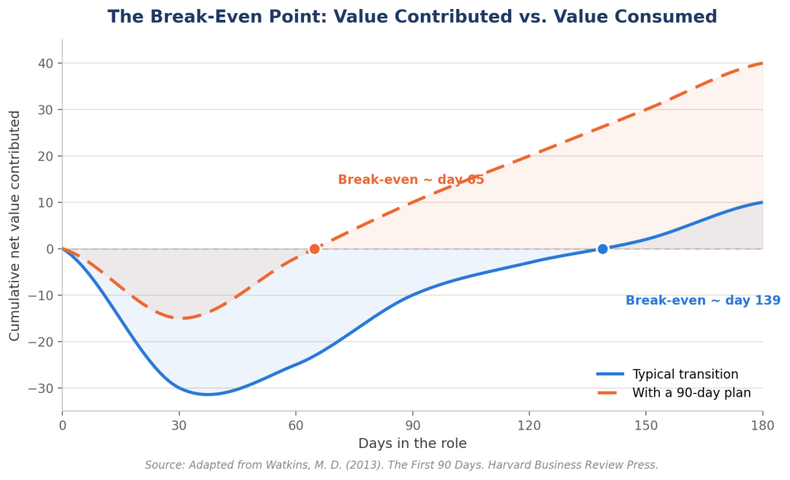

Topic 1: Navigating the Leadership Transition
Chủ đề 1: Điều hướng bước chuyển sang vai trò quản lý
Từ nhân sự chuyên môn sang quản lý trực tiếp · PGS. Burkhard Schrage · 36 slide
Quy ước của bản dịch. Mỗi slide được trình bày thành một khối: cột bên trái là nguyên văn tiếng Anh (màu xám), cột bên phải là bản tiếng Việt (màu đen). Nội dung được dịch sát theo từng slide, không lược bỏ.
Thuật ngữ chuyên môn được dịch sang tiếng Việt kèm nguyên bản tiếng Anh trong ngoặc ở lần xuất hiện đầu tiên. Các nguồn trích dẫn học thuật giữ nguyên tiếng Anh theo chuẩn APA.
Topic 1: Navigating the Leadership Transition
Chủ đề 1: Điều hướng bước chuyển sang vai trò quản lý
Assoc. Professor Burkhard Schrage
PGS. Burkhard Schrage
Here's How We'll Spend the Next Three Hours
Ba giờ tới sẽ diễn ra như thế nào
| Time | EN | VI |
|---|---|---|
| 9:00 – 9:10 | Welcome & Frame · Kick-off | Chào mừng & định khung · Khai mạc |
| 9:10 – 9:35 | The Mindset Shift · LO1 | Bước chuyển tư duy · LO1 |
| 9:35 – 10:10 | Group Activity 1: Spot the Trap · LO1 applied | Hoạt động nhóm 1: Nhận diện cái bẫy · Vận dụng LO1 |
| 10:10 – 10:30 | Debrief & Bridge · LO1 → LO2 | Tổng kết & chuyển tiếp · LO1 → LO2 |
| 10:30 – 10:45 | Break | Nghỉ giữa giờ |
| 10:45 – 11:15 | Assessing Team Readiness · LO2 | Đánh giá mức độ sẵn sàng của nhóm · LO2 |
| 11:15 – 11:45 | Group Activity 2: Match the Delegation · LO3 | Hoạt động nhóm 2: Ghép cách giao việc · LO3 |
| 11:45 – 12:00 | Build Your Transition Plan · LO4 | Xây dựng kế hoạch chuyển đổi · LO4 |
You Will Be Able To…
Học viên sẽ có thể…
- Explain the shift from individual contributor to manager.
- Identify team members' strengths and development needs.
- Adapt guidance and task allocation to individual capability.
- Create a practical leadership transition plan.
- Giải thích bước chuyển từ nhân sự chuyên môn sang quản lý.
- Xác định điểm mạnh và nhu cầu phát triển của từng thành viên trong nhóm.
- Điều chỉnh cách hướng dẫn và phân bổ công việc theo năng lực của từng người.
- Xây dựng một kế hoạch chuyển đổi vai trò lãnh đạo khả thi.
Your Job Has Changed – Now You Have to Change With It.
Công việc đã thay đổi – người làm cũng phải thay đổi theo.
IC · Individual Contributor
- Success = personal output
- Win by doing the work yourself
- Focus: your own tasks and craft
M · First-Line Manager
- Success = team output
- Win by building capability in others
- Focus: growth, accountability, culture
IC · Nhân sự chuyên môn
- Thành công = kết quả của cá nhân
- Thắng bằng cách tự mình làm việc
- Tập trung: nhiệm vụ và tay nghề của bản thân
M · Quản lý trực tiếp
- Thành công = kết quả của cả nhóm
- Thắng bằng cách xây dựng năng lực cho người khác
- Tập trung: sự phát triển, tinh thần trách nhiệm (accountability), văn hoá
Source: Hill, L. A. (2007). Becoming the boss. Harvard Business Review, 85(1), 48–56.
A Career Is a Journey, Not a Job
Sự nghiệp là một hành trình, không phải một công việc
| Stage 1: Contributing Dependently Giai đoạn 1: Đóng góp phụ thuộc |
Stage 2: Contributing Independently Giai đoạn 2: Đóng góp độc lập |
Stage 3: Contributing Through Others Giai đoạn 3: Đóng góp qua người khác |
Stage 4: Contributing Strategically Giai đoạn 4: Đóng góp chiến lược |
|
|---|---|---|---|---|
| Performance Expectation Kỳ vọng về hiệu quả |
Build credibility, learn Tạo dựng uy tín, học hỏi |
Establish and apply expertise Xác lập và áp dụng chuyên môn |
Guide, coordinate, develop others Hướng dẫn, phối hợp, phát triển người khác |
Shape organizational direction Định hình hướng đi của tổ chức |
| Primary Role Vai trò chính |
Helper, learner Người hỗ trợ, người học |
Individual contributor, specialist Nhân sự chuyên môn, chuyên gia |
Coach, mentor, idea leader, internal consultant, project leader Người kèm cặp, người dẫn dắt, người dẫn dắt ý tưởng, tư vấn nội bộ, trưởng dự án |
Sponsor, innovator, business leader Người bảo trợ, người đổi mới, lãnh đạo kinh doanh |
| Major Stage Transition Issue Vấn đề then chốt khi chuyển giai đoạn |
Recognize need for dependence Nhận ra sự cần thiết của việc phụ thuộc |
Accept independence Chấp nhận sự độc lập |
Accept responsibility (formal or informal) for others' efforts Chấp nhận trách nhiệm (chính thức hoặc không chính thức) với công việc của người khác |
Holistic view of business, making tough choices Nhìn tổng thể hoạt động kinh doanh, đưa ra lựa chọn khó |
| Performance Nền tảng hiệu quả |
Support others, build credibility Hỗ trợ người khác, tạo dựng uy tín |
Individual capability, subject matter expertise Năng lực cá nhân, chuyên môn sâu |
Relationships, networks, and technical breadth Quan hệ, mạng lưới và độ rộng về kỹ thuật |
Establish organizational priorities, broad impact and influence Thiết lập ưu tiên của tổ chức, tác động và ảnh hưởng rộng |
Source: Dalton, G. W., Thompson, P. H., & Price, R. L. (1977). The four stages of professional careers: A new look at performance by professionals. Organizational Dynamics, 6(1), 19–42.
Five Common Myths Explain Why New Managers Don't Get It.
Năm ngộ nhận phổ biến giải thích vì sao quản lý mới chưa hiểu đúng vai trò.
Slide 06 trình bày cột “Myth”; slide 07 bổ sung cột “Reality”. Bảng dưới đây gộp cả hai bước.
| Myth Ngộ nhận |
Reality Thực tế |
|
|---|---|---|
| Defining characteristic of the new role Đặc trưng định hình vai trò mới |
Authority — “Now I will have the freedom to implement my ideas.” Quyền hạn — “Giờ mình sẽ được tự do triển khai ý tưởng của mình.” |
Interdependency — “It's humbling that someone who works for me could get me fired.” Sự phụ thuộc lẫn nhau — “Thật khiêm nhường khi biết một người làm việc dưới quyền mình có thể khiến mình mất việc.” |
| Source of power Nguồn quyền lực |
Formal authority — “I will finally be on top of the ladder.” Quyền hạn chính thức — “Cuối cùng mình cũng ở trên đỉnh cái thang.” |
“Everything but” — “Folks were wary, and you really had to earn it.” “Mọi thứ trừ quyền hạn” — “Mọi người đều dè dặt, và uy tín phải tự mình giành lấy.” |
| Desired outcome Kết quả mong muốn |
Control — “I must get compliance from my subordinates.” Sự kiểm soát — “Mình phải khiến cấp dưới tuân thủ.” |
Commitment — “Compliance does not equal commitment.” Sự cam kết — “Tuân thủ không đồng nghĩa với cam kết.” |
| Managerial focus Trọng tâm quản lý |
Managing one-on-one — “My role is to build relationships with individual subordinates.” Quản lý theo từng cá nhân — “Vai trò của mình là xây dựng quan hệ với từng cấp dưới.” |
Leading the team — “I need to create a culture that will allow the group to fulfill its potential.” Dẫn dắt cả nhóm — “Mình cần tạo ra một văn hoá cho phép cả nhóm phát huy hết tiềm năng.” |
| Key challenge Thách thức then chốt |
Keeping the operation in working order — “My job is to make sure the operation runs smoothly.” Giữ cho bộ máy vận hành trơn tru — “Việc của mình là đảm bảo mọi thứ chạy êm.” |
Making changes that improve team performance — “I am responsible for initiating changes to enhance the group's performance.” Tạo ra thay đổi giúp nhóm làm tốt hơn — “Mình có trách nhiệm khởi xướng những thay đổi nhằm nâng cao hiệu quả của nhóm.” |
Source: Hill, L. A. (2007). Becoming the boss. Harvard Business Review, 85(1), 48–56.
You're Not Alone – Nearly Half of New Managers Underperform.
Không chỉ một mình – gần một nửa quản lý mới chưa đạt kỳ vọng.
~50% of newly promoted managers underperform within their first 18 months
Not from lack of talent. From carrying individual-contributor habits into a job that no longer rewards them. Research on first-time managers keeps surfacing the same three failure points – the traps on the next slides.
~50% quản lý mới được đề bạt không đạt kỳ vọng trong 18 tháng đầu
Không phải vì thiếu năng lực, mà vì mang thói quen của nhân sự chuyên môn vào một công việc không còn ghi nhận những thói quen đó. Các nghiên cứu về quản lý lần đầu liên tục chỉ ra cùng ba điểm thất bại – ba cái bẫy ở các slide tiếp theo.
Source: Smith, D. D. (2023, May 17). 5 mistakes new managers make. Harvard Business Review.
If You Keep Doing the Work Yourself, Your Team Never Learns To.
Nếu quản lý cứ tự làm, nhóm sẽ không bao giờ học được cách làm.
Doing the work instead of building the capability to do it without you.
The instinct is understandable – you were promoted because you were excellent at the work. But every time you jump in because you're faster, your team learns nothing. Watkins (2013) frames this as failing to make the mental shift from “doer” to “leader”; Hill (2007) documents it as the single hardest transition new managers report.
Tự làm việc thay vì xây dựng năng lực để nhóm làm được mà không cần đến mình.
Bản năng này dễ hiểu – việc đề bạt đến từ chuyên môn xuất sắc. Nhưng mỗi lần quản lý nhảy vào làm vì mình nhanh hơn, nhóm không học được gì. Watkins (2013) gọi đó là việc không hoàn tất bước chuyển tư duy từ “người làm” sang “người dẫn dắt”; Hill (2007) ghi nhận đây là bước chuyển khó nhất mà quản lý mới nêu ra.
Source: Hill, L. A. (2007). Becoming the boss. Harvard Business Review, 85(1), 48–56; Watkins, M. D. (2013). The first 90 days. Harvard Business Review Press.
You Avoid Delegating Because It Feels Like Losing Control.
Né giao việc vì cảm giác như đang mất kiểm soát.
“It's faster if I just do it” – usually without a real readiness check behind it.
First-time managers consistently rank “adjusting to people management and displaying authority” among their top challenges – many avoid delegating not because their team can't handle the work, but because handing it over feels like losing control. Left unaddressed, this caps how much the team can actually deliver.
“Mình làm thì nhanh hơn” – thường không dựa trên một đánh giá thực sự về mức độ sẵn sàng.
Quản lý lần đầu liên tục xếp “thích nghi với việc quản lý con người và thể hiện quyền hạn” vào nhóm thách thức lớn nhất – nhiều người né giao việc không phải vì nhóm không làm được, mà vì việc chuyển giao mang lại cảm giác mất kiểm soát. Nếu không xử lý, điều này giới hạn khối lượng nhóm có thể thực sự tạo ra.
Source: Gentry, W. A., Logan, P., & Tonidandel, S. (2014). Understanding the leadership challenges of first-time managers. Center for Creative Leadership; Smith, D. D. (2023). 5 mistakes new managers make. Harvard Business Review.
Your Accountability Problems Start With Expectations You Never Made Explicit.
Vấn đề về tinh thần trách nhiệm bắt đầu từ những kỳ vọng chưa bao giờ được nói rõ.
Assuming people know what's expected instead of saying it out loud and confirming it landed.
Most “accountability” failures trace back to something that was never actually made explicit – what “done” looks like, how often to check in, what to escalate versus decide. Hill (2007) found this ambiguity was often invisible to the new manager, who assumed clarity existed where it didn't.
Mặc định rằng mọi người đã biết kỳ vọng là gì, thay vì nói ra và xác nhận thông điệp đã được tiếp nhận.
Phần lớn thất bại về “tinh thần trách nhiệm” đều bắt nguồn từ điều chưa từng được nói rõ – thế nào là “hoàn thành”, tần suất cập nhật tiến độ, việc nào cần báo lên và việc nào tự quyết. Hill (2007) nhận thấy sự mơ hồ này thường vô hình với quản lý mới, người vẫn cho rằng mọi thứ đã rõ ràng.
Source: Hill, L. A. (2007). Becoming the boss. Harvard Business Review, 85(1), 48–56; Gentry, Logan, & Tonidandel (2014). Center for Creative Leadership.
Now, Spot the Trap in Your Own Team.
Nhận diện cái bẫy trong chính nhóm của mình.
How it works
- Form groups of 8 members
- Each person shares one real moment – from your own experience – where a trap showed up
- As a group, name which trap(s) were at play
- Discuss what a different response could have looked like
- Pick one story and prepare a one-line lesson for debrief
Debrief question
Which trap shows up most in your own team right now?
Cách thực hiện
- Chia nhóm 8 người
- Mỗi người kể một tình huống thật – từ trải nghiệm của bản thân – khi một cái bẫy xuất hiện
- Cả nhóm gọi tên (những) cái bẫy đang hiện diện
- Thảo luận xem có thể phản ứng khác đi như thế nào
- Chọn một câu chuyện và chuẩn bị một bài học gói trong một câu để tổng kết
Câu hỏi tổng kết
Cái bẫy nào xuất hiện nhiều nhất trong nhóm của mình hiện nay?

Take a 15-Minute Break – You've Earned It.
Nghỉ 15 phút.
You Can't Use One Style on Everyone – Adapt to Their Readiness.
Không thể dùng một phong cách cho tất cả – cần điều chỉnh theo mức độ sẵn sàng.
| # | Style | Readiness | What the manager does |
|---|---|---|---|
| 1 | Telling · Direct Chỉ dẫn · Chỉ đạo |
Low readiness Mức sẵn sàng thấp |
Give clear instructions and supervise closely. Đưa hướng dẫn rõ ràng và giám sát chặt. |
| 2 | Selling · Coach Thuyết phục · Kèm cặp |
Some readiness Sẵn sàng ở mức nhất định |
Explain your reasoning; stay involved, invite questions. Giải thích lý do; vẫn tham gia sát, khuyến khích đặt câu hỏi. |
| 3 | Participating · Motivate Cùng tham gia · Tạo động lực |
Growing readiness Mức sẵn sàng đang tăng |
Share the decision; support their confidence. Cùng ra quyết định; củng cố sự tự tin của họ. |
| 4 | Delegating · Delegate Uỷ quyền · Giao việc |
High readiness Mức sẵn sàng cao |
Hand over responsibility and authority. Chuyển giao cả trách nhiệm và quyền hạn. |
Source: Hersey, P., & Blanchard, K. H. (1969). Life cycle theory of leadership. Training and Development Journal, 23, 26–35; Landsberg, M. (1996). The Tao of coaching. HarperCollins Business.
Let Skill and Will, Not Seniority, Decide How Much You Delegate.
Để năng lực và ý chí, không phải thâm niên, quyết định mức giao việc.
Skill — Can they actually do this task – do they have the technical ability and experience?
Will — Are they motivated and confident enough to take it on right now?
Cross the two and you get the same four styles from the last slide, mapped onto a working tool: direct, coach, motivate, delegate.
Năng lực (skill) — Người đó có thực sự làm được việc này – có đủ khả năng kỹ thuật và kinh nghiệm?
Ý chí (will) — Người đó có đủ động lực và tự tin để nhận việc ngay lúc này?
Giao hai trục này với nhau sẽ ra đúng bốn phong cách ở slide trước, dưới dạng một công cụ dùng được: direct, coach, motivate, delegate.
Source: Adapted from Hersey, P., & Blanchard, K. H. (1969). Life cycle theory of leadership. Training and Development Journal, 23, 26–35; and Landsberg, M. (1996). The Tao of Coaching. HarperCollins Business.
You Can't Guess Skill and Will – You Have to Go Find Out.
Không thể phỏng đoán năng lực và ý chí – phải đi tìm hiểu.
Skill
- Their track record on similar work – not tenure or job title.
- The quality of a small, real test assignment.
- How they explain their approach when you ask “how would you tackle this?”
Will
- Whether they volunteer, or need asking twice.
- Follow-through over time – not just one instance.
- A direct question: “How confident are you? How much do you want this?”
Năng lực
- Thành tích thực tế ở những việc tương tự – không phải thâm niên hay chức danh.
- Chất lượng của một việc thử nhỏ nhưng thật.
- Cách người đó trình bày phương án khi được hỏi “sẽ xử lý việc này thế nào?”
Ý chí
- Tự nguyện nhận việc, hay phải nhắc đến lần thứ hai.
- Sự theo đến cùng qua thời gian – không chỉ một lần.
- Một câu hỏi trực tiếp: “Mức độ tự tin đến đâu? Mong muốn làm việc này đến đâu?”
Source: Adapted from Blanchard, K., Zigarmi, P., & Zigarmi, D. (2013). Leadership and the one minute manager (Updated ed.). William Morrow; Landsberg, M. (1996). The Tao of coaching. HarperCollins Business.
Match Your Style to Their Skill and Will, Not to Your Comfort.
Chọn phong cách theo năng lực và ý chí của người kia, không theo sự thoải mái của mình.
| Skill / Will | Style | Approach |
|---|---|---|
| Low skill / High will Năng lực thấp / Ý chí cao |
Coach Kèm cặp |
Give real work, check in often, build competence fast. Giao việc thật, theo sát thường xuyên, xây năng lực nhanh. |
| High skill / High will Năng lực cao / Ý chí cao |
Delegate Giao việc |
Set the outcome, not the method – then get out of the way. Đặt ra kết quả, không đặt ra cách làm – rồi để họ tự chạy. |
| Low skill / Low will Năng lực thấp / Ý chí thấp |
Direct Chỉ đạo |
Guide closely, set explicit checkpoints, teach the why. Hướng dẫn sát, đặt mốc kiểm tra rõ ràng, giải thích lý do phía sau. |
| High skill / Low will Năng lực cao / Ý chí thấp |
Motivate Tạo động lực |
Find out what's blocking motivation before assigning more. Tìm ra điều đang chặn động lực trước khi giao thêm việc. |
Source: Hersey & Blanchard (1969); Landsberg, M. (1996). The Tao of Coaching. HarperCollins Business.
Now, Match a Delegation Style to a Real Person.
Ghép phong cách giao việc với một người thật.
How it works
- Pair up with someone from a different team
- Describe one real team member's skill and will – without naming them
- Your partner recommends direct, coach, motivate, or delegate – using the matrix from the last slide – and why
- Swap roles and repeat
- Note one delegation shift you'll make this week
Debrief question
What's one delegation shift you'll make this week?
Cách thực hiện
- Ghép cặp với một người ở nhóm khác
- Mô tả năng lực và ý chí của một thành viên thật – không nêu tên
- Người còn lại đề xuất direct, coach, motivate hay delegate – dựa trên ma trận ở slide trước – kèm lý do
- Đổi vai và làm lại
- Ghi lại một thay đổi về giao việc sẽ thực hiện trong tuần này
Câu hỏi tổng kết
Thay đổi nào về giao việc sẽ được thực hiện trong tuần này?
A structured 90-day plan moves your break-even point weeks earlier.
Một kế hoạch 90 ngày có cấu trúc đưa điểm hoà vốn đến sớm hơn nhiều tuần.
Watkins, M. D. (2013) adapts this classic HBR framework for any leadership transition, including your first management role.
The break-even point
The moment you've contributed as much value to the organization as you've consumed from it. Most failed transitions never reach it. A structured plan shifts the break-even point earlier.
Watkins, M. D. (2013) điều chỉnh khung HBR kinh điển này cho mọi bước chuyển vai trò lãnh đạo, kể cả vai trò quản lý đầu tiên.
Điểm hoà vốn (break-even point)
Thời điểm giá trị đã đóng góp cho tổ chức bằng đúng giá trị đã tiêu tốn của tổ chức. Phần lớn các bước chuyển thất bại không bao giờ đạt tới điểm này. Một kế hoạch có cấu trúc giúp điểm hoà vốn đến sớm hơn.

Source: Watkins, M. D. (2013). The first 90 days. Harvard Business Review Press.
Diagnose the Situation You've Inherited Before You Choose a Style.
Chẩn đoán tình huống được thừa hưởng trước khi chọn phong cách.
| Situation | Meaning | |
|---|---|---|
| S | Start-up Khởi tạo | Building a team or function that didn't exist before. Xây dựng một nhóm hoặc bộ phận trước đó chưa tồn tại. |
| T | Turnaround Vực dậy | Fixing a team that is visibly struggling. Sửa một nhóm đang rõ ràng gặp khó. |
| A | Accelerated Growth Tăng trưởng tăng tốc | Scaling a team that's already working – fast. Mở rộng nhanh một nhóm đang hoạt động tốt. |
| R | Realignment Tái định hướng | A team that looks fine but is quietly drifting off track. Một nhóm trông ổn nhưng đang âm thầm lệch hướng. |
| S | Sustaining Success Duy trì thành công | A strong team that mainly needs you not to break it. Một nhóm mạnh, điều cần nhất là quản lý đừng làm nó hỏng. |
Source: Watkins, M. D. (2013). The first 90 days. Harvard Business Review Press.
Twelve concrete actions carry you from day one to full accountability.
Mười hai hành động cụ thể đưa quản lý từ ngày đầu đến khi nhận trọn trách nhiệm.
Days 1–30 · Learn before you act
- Declare the transition to yourself
- Diagnose the situation you're inheriting
- Run a structured 1:1 with every team member
- Build a 30-day learning agenda
- Watch for the expertise trap
Days 30–60 · Negotiate, then act
- Have five explicit conversations with your manager
- Secure one early win that matters
- Match delegation to readiness
Days 60–90 · Build the team, lock in accountability
- Reset expectations explicitly, in writing
- Decide who stays, who grows, who moves
- Build your support network
- Draft your leadership transition plan
Ngày 1–30 · Hiểu trước khi hành động
- Tự tuyên bố bước chuyển với chính mình
- Chẩn đoán tình huống đang thừa hưởng
- Thực hiện 1:1 có cấu trúc với từng thành viên
- Xây dựng lịch trình học hỏi 30 ngày
- Đề phòng cái bẫy chuyên môn
Ngày 30–60 · Thương lượng, rồi hành động
- Có năm cuộc trao đổi rõ ràng với cấp trên
- Giành một thắng lợi sớm có ý nghĩa
- Ghép mức giao việc với mức độ sẵn sàng
Ngày 60–90 · Xây dựng nhóm, chốt tinh thần trách nhiệm
- Thiết lập lại kỳ vọng một cách rõ ràng, bằng văn bản
- Quyết định ai ở lại, ai phát triển, ai chuyển đi
- Xây dựng mạng lưới hỗ trợ
- Soạn kế hoạch chuyển đổi vai trò lãnh đạo
Source: Watkins, M. D. (2013). The first 90 days. Harvard Business Review Press.
Declare the Transition to Yourself
Tự tuyên bố bước chuyển với chính mình
Old success was personal output; new success is team output – capability, accountability, results delivered by others.
Write down, in one sentence, what “success” meant in your old role and what it means now. Read it before every 1:1 this month.
Thành công cũ là kết quả cá nhân; thành công mới là kết quả của nhóm – năng lực, tinh thần trách nhiệm, kết quả do người khác tạo ra.
Viết ra trong một câu: “thành công” nghĩa là gì ở vai trò cũ và nghĩa là gì bây giờ. Đọc lại câu đó trước mỗi buổi 1:1 trong tháng này.
Diagnose the Situation You're Inheriting
Chẩn đoán tình huống đang thừa hưởng
Start-up, turnaround, accelerated growth, realignment, or sustaining success (STARS) – name it before you act.
Your diagnosis changes everything downstream: it determines how directive or how patient you need to be.
Khởi tạo, vực dậy, tăng trưởng tăng tốc, tái định hướng hay duy trì thành công (STARS) – gọi tên nó trước khi hành động.
Chẩn đoán quyết định toàn bộ những gì diễn ra sau đó: nó xác định mức độ chỉ đạo hay mức độ kiên nhẫn cần có.
Run a Structured 1:1 With Every Team Member
Thực hiện 1:1 có cấu trúc với từng thành viên
Build an early read on each person's skill and will – it drives how you delegate next month.
Ask: what does this role actually involve day to day? What would you change if it were up to you?
Hình thành đánh giá ban đầu về năng lực và ý chí của từng người – đây là cơ sở cho cách giao việc trong tháng sau.
Câu hỏi nên dùng: công việc này thực tế gồm những gì mỗi ngày? Nếu được quyết, bạn sẽ thay đổi điều gì?
Build a 30-Day Learning Agenda, Not an Action Plan
Xây dựng lịch trình học hỏi 30 ngày, không phải kế hoạch hành động
Understand the work, the informal network, and the history before you start changing things.
A manager who acts confidently on a wrong diagnosis does more damage than one who takes three extra weeks to get it right.
Hiểu công việc, mạng lưới không chính thức và lịch sử của nhóm trước khi bắt đầu thay đổi.
Một quản lý hành động tự tin dựa trên chẩn đoán sai gây thiệt hại nhiều hơn một quản lý dành thêm ba tuần để chẩn đoán cho đúng.
Watch Yourself for the Expertise Trap
Tự đề phòng cái bẫy chuyên môn
Every time you're tempted to just do it yourself, ask: what does my team fail to learn today?
Name it out loud in your notes – this becomes evidence for the delegation section of your transition plan.
Mỗi lần muốn tự làm cho nhanh, hãy tự hỏi: hôm nay nhóm mình bỏ mất cơ hội học điều gì?
Ghi rõ điều đó vào sổ tay – đây sẽ là dữ liệu cho phần giao việc trong kế hoạch chuyển đổi.
Have Five Explicit Conversations With Your Manager
Có năm cuộc trao đổi rõ ràng với cấp trên
Situation, expectations, style, resources, and your own development – don't assume alignment, negotiate it.
Unclear expectations at this level are the fastest way to lose credibility with your own team later.
Tình hình, kỳ vọng, phong cách làm việc, nguồn lực và sự phát triển của bản thân – không mặc định đã đồng thuận, hãy thương lượng.
Kỳ vọng không rõ ràng ở cấp này là cách nhanh nhất để mất uy tín với nhóm của mình về sau.
Secure One Early Win That Matters
Giành một thắng lợi sớm có ý nghĩa
Pick a real, visible priority; deliver it with the team, not around them – and give them the credit.
A good early win proves two things at once: that you can lead, and that the team is capable under your leadership.
Chọn một ưu tiên thật và thấy được; thực hiện cùng nhóm, không phải vòng qua nhóm – và ghi nhận công cho họ.
Một thắng lợi sớm tốt chứng minh hai điều cùng lúc: quản lý có thể dẫn dắt, và nhóm có năng lực dưới sự dẫn dắt đó.
Match Delegation to Each Person's Readiness
Ghép mức giao việc với mức độ sẵn sàng của từng người
Direct, coach, motivate, or delegate – based on the skill/will read you built in Step 3.
This is the same readiness matrix from earlier in the session: getting the match wrong in either direction is the fastest way to create resentment or failure.
Direct, coach, motivate hay delegate – dựa trên đánh giá năng lực/ý chí đã hình thành ở Bước 3.
Vẫn là ma trận mức độ sẵn sàng ở phần trước của phiên học: ghép sai theo bất kỳ hướng nào cũng là cách nhanh nhất tạo ra sự bất mãn hoặc thất bại.
Reset Expectations Explicitly, in Writing
Thiết lập lại kỳ vọng một cách rõ ràng, bằng văn bản
Confirm what “done” looks like, how you'll check in, and what to escalate versus decide.
Vague expectations are the root cause of most “accountability” problems.
Xác nhận thế nào là “hoàn thành”, sẽ theo dõi tiến độ ra sao, việc nào cần báo lên và việc nào tự quyết.
Kỳ vọng mơ hồ là nguyên nhân gốc của phần lớn vấn đề về “tinh thần trách nhiệm”.
Decide Who Stays, Who Grows, Who Moves
Quyết định ai ở lại, ai phát triển, ai chuyển đi
You inherited this team – honestly assess whether you have the right capability in the right seats.
You don't need to act on every gap immediately, but naming them now is part of the job.
Nhóm này là nhóm được thừa hưởng – hãy đánh giá trung thực xem đúng năng lực đã ở đúng vị trí hay chưa.
Không cần xử lý ngay mọi khoảng trống, nhưng gọi tên chúng ngay từ giờ là một phần của công việc.
Build Your Support Network
Xây dựng mạng lưới hỗ trợ
Three to five people who'll give you honest, outside perspective on how you're really doing.
New managers who go quiet under pressure take longer to correct course and burn out faster.
Ba đến năm người có thể đưa ra góc nhìn trung thực từ bên ngoài về tình hình thực tế của mình.
Quản lý mới im lặng khi chịu áp lực sẽ mất nhiều thời gian hơn để điều chỉnh và kiệt sức nhanh hơn.
Draft Your Leadership Transition Plan
Soạn kế hoạch chuyển đổi vai trò lãnh đạo
Pull Steps 1–11 together into the practical plan this program asks you to produce.
This is exactly what you'll start building in the final activity of today's session.
Tổng hợp Bước 1–11 thành bản kế hoạch thực tế mà chương trình yêu cầu.
Đây chính là phần sẽ bắt đầu xây dựng trong hoạt động cuối của phiên học hôm nay.
Now It's Your Turn to Draft the Plan.
Đến lượt soạn kế hoạch.
- What situation am I actually in – and what does that demand of my style?
- What is each team member's current readiness, and what does that mean for how I delegate to them?
- Where have I been over-relying on my own expertise, and what will I hand off in the next 30 days?
- What expectations need to be made explicit – with my team, and with my own manager?
- What early win will I pursue, and how will I make sure the team gets the credit?
- Mình đang thực sự ở tình huống nào – và tình huống đó đòi hỏi gì ở phong cách của mình?
- Mức độ sẵn sàng hiện tại của từng thành viên là gì, và điều đó nghĩa là gì với cách giao việc cho họ?
- Mình đang phụ thuộc quá mức vào chuyên môn của bản thân ở đâu, và sẽ chuyển giao việc gì trong 30 ngày tới?
- Những kỳ vọng nào cần được nói rõ – với nhóm, và với cấp trên của mình?
- Thắng lợi sớm nào mình sẽ theo đuổi, và làm sao để nhóm được ghi nhận?
Remember These Four Things Before You Go.
Bốn điều cần ghi nhớ trước khi rời phòng học.
- Success now means results through others – not personal output.
- Match your delegation style to each person's skill and will, not your comfort.
- Watch for the three traps: over-relying on expertise, avoiding delegation, and leaving expectations unclear.
- Use the First 90 Days structure – learn, then negotiate and act, then build and lock in accountability – to pace your own transition.
- Thành công giờ đây là kết quả thông qua người khác – không phải kết quả cá nhân.
- Ghép phong cách giao việc với năng lực và ý chí của từng người, không theo sự thoải mái của mình.
- Đề phòng ba cái bẫy: phụ thuộc quá mức vào chuyên môn, né giao việc, và để kỳ vọng mơ hồ.
- Dùng cấu trúc First 90 Days – hiểu, rồi thương lượng và hành động, rồi xây dựng và chốt tinh thần trách nhiệm – để định nhịp cho bước chuyển của chính mình.
These Are the Sources Behind Today's Session.
Các nguồn phía sau phiên học hôm nay.
- Blanchard, K., Zigarmi, P., & Zigarmi, D. (2013). Leadership and the one minute manager: Increasing effectiveness through situational leadership II (Updated ed.). William Morrow.
- Dalton, G. W., Thompson, P. H., & Price, R. L. (1977). The four stages of professional careers: A new look at performance by professionals. Organizational Dynamics, 6(1), 19–42.
- De Smet, A., D'Auria, G., Meijknecht, L., & Albaharna, M. (2024). Go, teams: When teams get healthier, the whole organization benefits. McKinsey & Company.
- Gentry, W. A., Logan, P., & Tonidandel, S. (2014). Understanding the leadership challenges of first-time managers: Strengthening your leadership pipeline [White paper]. Center for Creative Leadership. https://doi.org/10.35613/ccl.2014.1021
- Hersey, P., & Blanchard, K. H. (1969). Life cycle theory of leadership. Training and Development Journal, 23, 26–35.
- Hill, L. A. (2007). Becoming the boss. Harvard Business Review, 85(1), 48–56.
- Landsberg, M. (1996). The Tao of coaching: Boost your effectiveness at work by inspiring and developing those around you. HarperCollins Business.
- Smith, D. D. (2023, May 17). 5 mistakes new managers make. Harvard Business Review. https://hbr.org/2023/05/5-mistakes-new-managers-make
- Watkins, M. D. (2013). The first 90 days: Proven strategies for getting up to speed faster and smarter (Updated and expanded ed.). Harvard Business Review Press.